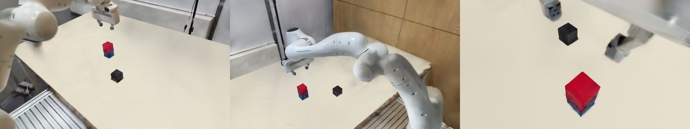
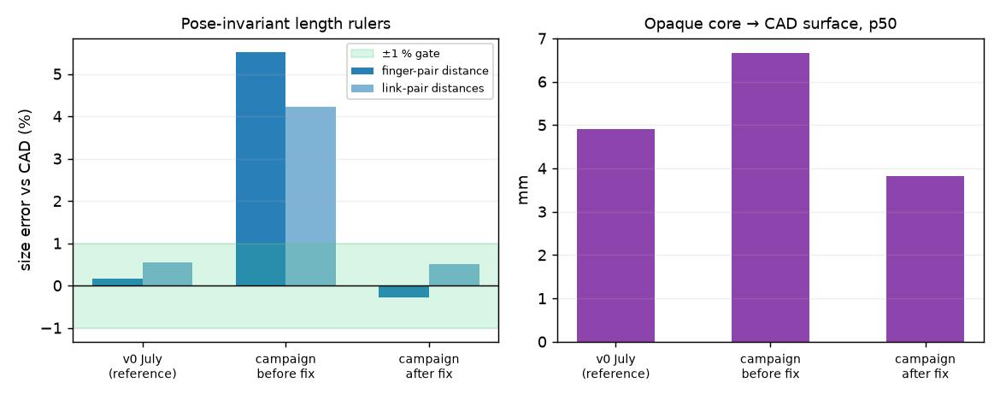
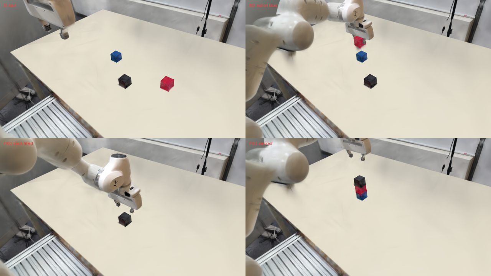

Robot Learning
3D Gaussian Splatting for Robot Demonstration Augmentation
AIDAS Lab · SNU · Ongoing · Ongoing collaboration
Render multi-view robot demonstrations from reconstructed scenes and robot kinematics.

Motivation
Recorded demonstrations capture a task from a fixed set of cameras. A reconstructed scene lets us replay robot motion and render additional viewpoints.
- Goal: Build reusable scene assets for visual data augmentation in robot learning.
- Constraint: Keep robot motion, object poses, and camera geometry consistent across views.
My contribution
I develop the 3DGS augmentation module within a larger dataset collaboration at AIDAS Lab. My work covers reconstruction, alignment, rendering, and validation, building on RoboSplat and SplatSim.
Asset preparation and rendering
1. Metric alignment without absorbing reconstruction errors
Use calibrated geometry and rigid-part distances to set reconstruction scale before refining pose.
- Scale rulers: Compare distances between rigid robot parts with URDF dimensions. A Gaussian shell can bias nearest-surface or silhouette measurements.
- Rigid refinement: Keep scale fixed and run point-to-point ICP on robot Gaussians with opacity at least 0.8.
- Independent checks: Check the table footprint, cube dimensions, and robot rulers in the same metric frame.


2. CAD-based link assignment and canonical assets
Transform Gaussian centers into the robot base frame and query their distance to each sampled CAD link surface.
- Link labels: Assign each candidate to the nearest link. Mark candidates beyond the distance cap as background.
- Canonical pose: Apply inverse forward kinematics at the capture pose to create reusable articulated assets.
- Round trip: Reapply the capture pose and check that the original posed geometry is recovered.
3. Separate trajectory planning from Gaussian rendering
Replay joint and object states from a planned episode through the Gaussian scene.
- Articulated robot: Use forward kinematics to pose every robot-link asset at each timestep.
- Manipulated objects: Replay object positions and orientations with explicit grasp attachment and release states.
- Synchronized cameras: Render two standing cameras and an FK-updated wrist camera from the same timestep.
- Episode output: Write camera images and robot/object state together for the dataset pipeline.


4. Repair the geometry novel views expose
Complete surfaces that were hidden or poorly reconstructed in the static capture.
- Cube faces: Reconstruct a rolled capture separately and align matching cubes. Transplant the missing surface band with colors from the static capture.
- Table surface: Replace haze with a Gaussian sheet on the calibrated plane, bounded by the measured tabletop rectangle.
5. Gate episodes before dataset export
Validate geometry and rendered observations before accepting an episode.
- Grasp geometry: Check finger spacing, object continuity, and the canonical-to-posed robot round trip.
- Rendered views: Check black frames and per-object wrist visibility while an object is carried.
- Dataset boundary: Rendering checks establish episode consistency. Evaluate robot-policy performance separately.
Current progress
The module generates rendered manipulation episodes and checks their geometry and visibility.
The broader dataset project is ongoing. Robot-policy performance has not yet been established by these generation checks.